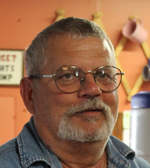
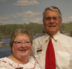
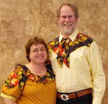
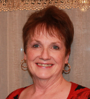

2018 Federation Officer Nominees
Here are the candidates running for office for the 2018-2019 year in the Oregon
Federation of Square and Round Dance Clubs. Your club secretary will receive
a ballot by early March, and the ballot is due back with the
Federation Secretary by April 21.
The current President (Kathy Roberts) automatically becomes the Past President.
The current 1st Vice President (Lorri McIntosh) automatically becomes the President.
The current Treasurer (Lane Clem) is in the second year of a 2-year term.
First Vice President
|
|
1st VP -- Karyn Buchheit
Silver City Squares
Mid-Willamette Area Council
Residence: Silverton, OR
Occupation: Stay at home mom
Dance experience: 42 years
Club offices held: President, Vice President, Secretary, Treasurer, Delegate
Council offices held: President, Vice President
Federation offices held: Youth Advisor
Other leadership: Pacific Northwest Teen Square Dance Festival advisor,
School Board member
|
|
|
|
1st VP -- Dave Cooper
Mavericks
South Coast Council
Residence: Port Orford, OR
Occupation: Retired teacher
Dance experience: 25 years
Club offices held: President, Area Delegate
Council offices held: State Delegate
Federation offices held: 1st Vice President, President, Past President
Other leadership: Summer Festival Chairman
|
Second Vice President
|

|
2nd VP -- Bob Houston
Saints N Aints
South Coast Council
Residence: Coos Bay, OR
Occupation: Log truck driver
Dance experience: 41 years
Club offices held: President, Vice President
Council offices held: President, Vice President
Federation offices held: 2nd Vice Preaident
|
|
|

|
2nd VP -- Gary Clark
Sunset Promenaders
Tualatin Valley Council
Residence: North Plains, OR
Occupation: Sales, retired
Dance experience: 47 years
Club offices held: President, Vice President
Council offices held: President, Vice President
Other leaderhip: Summer Festival Chairman, Seaside Sashay Chairman (2x)
|
Secretary
|

|
Secretary -- Tim Hagey
Spin Cycle Squares, IWW
Emerald Empire Council
Residence: Albany, OR
Occupation: Human Resources
Dance experience: 16 years
Federation offices held: Secretary
Other experience: Chairman Mid-Winter Festival
|
Membership
|

|
Membership -- Patty Cooper
Mavericks
South Coast Council
Residence: Port Orford, OR
Dance experience: 22 years
Club offices held: President, Secretary, Treasurer, Membership
Council offices held: President, Vice President
Federation offices held: Membership, Historian
|
|
|